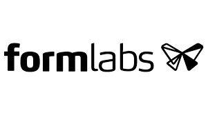
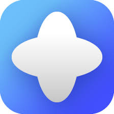
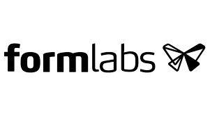
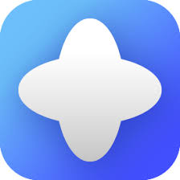
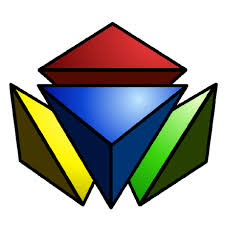
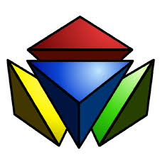

Sobre mí
Miriam Gutiérrez Cobo
Soy estudiante de Ingeniería Biomédica. Esto me ha permitido adquirir conocimientos técnicos, a la vez que desarrollar habilidades analíticas y de resolución de problemas que han entrenado mi mente para afrontar retos complejos. Me apasiona seguir aprendiendo y creciendo, explorando cómo la tecnología puede mejorar la salud y la calidad de vida de las personas.

Situación actual
Actualmente curso 4º de la carrera de Ingeniería Biomédica en la Universidad Politécnica de Madrid. Este año académico lo estoy realizando en Roma, en la Universidad Roma Tre, como parte del programa Erasmus. Esta experiencia me permite aprender en un entorno internacional, conocer otras culturas y enriquecerme tanto a nivel personal como académico.
Intereses
Me atrae especialmente los ámbitos donde se pueda aplicar de forma directa el conocimiento técnico, como entornos de desarrollo donde los resultados se implementan, se prueban y tienen un impacto real. Me motiva contribuir a soluciones que mejoren la vida de las personas y respondan a necesidades concretas.
Mis principales áreas de interés incluyen la biomecánica, la bioinstrumentación y los biomateriales. No obstante, también estoy interesada en otros ámbitos como la programación o el análisis de datos, siempre que me permitan seguir aprendiendo y aportar valor.


 





 
